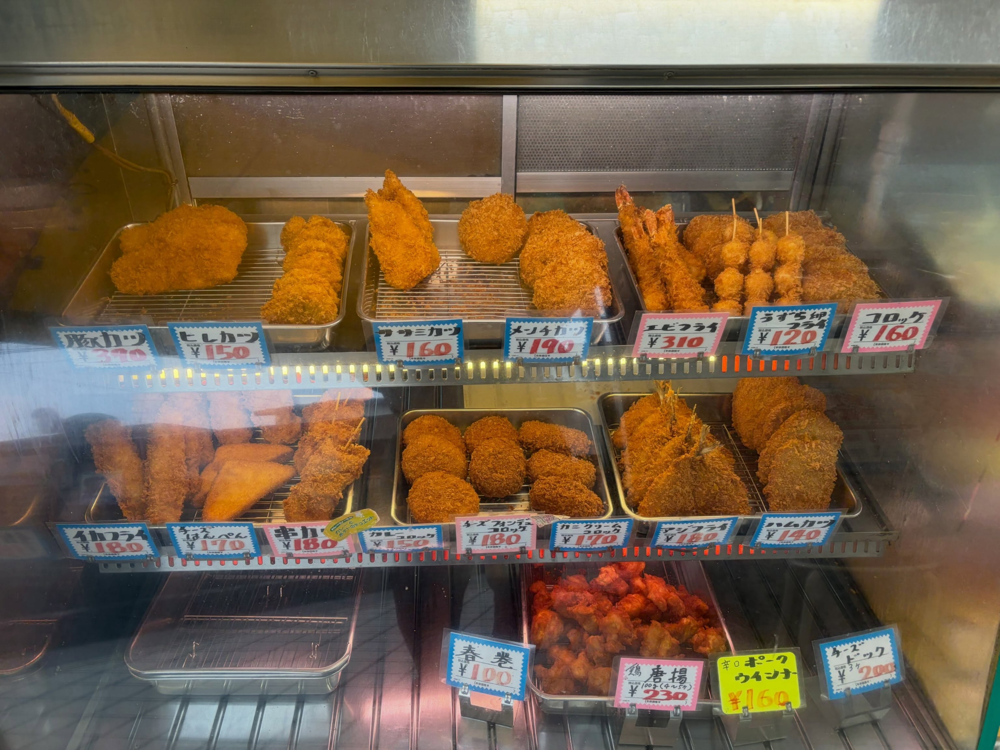
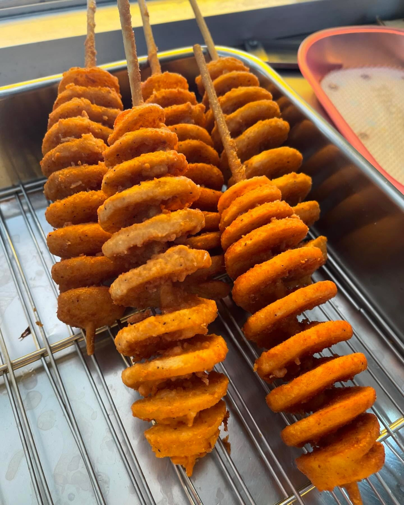

Concept戸澤精肉店について
上福岡駅から歩いて11分、中央通り沿い。
黄色いテント屋根が目印の、町のお肉屋さんです。
お肉はすべて国産。
夕方のショーケースには、揚げたてのお惣菜が並びます。
正面のシャッターは閉まったままのことがありますが、営業しています。
お店に向かって左側からお入りください。
近くにこのお店があって、
本当に良かった。
Googleマップのクチコミより
Itemお惣菜と、お肉
-
コロッケ
外はカリッと、中はほくほく。冷めても衣がサクサク、というクチコミもあります。
-
メンチカツ
玉ねぎがたっぷり。ソースをかけずにそのままで、という声もあります。
-
アジフライ
アジフライも、日によってショーケースに並びます。
このほか、カニクリームコロッケ・ハムカツ・ヒレカツ・とんかつ・唐揚げ・ポテトサラダ・餃子・焼売などが並ぶ日もあります。
お肉はすべて国産です。価格は店頭でご確認ください。
Photos店先のようす


写真はお店のInstagram（@tozawaseinikuten）の投稿からお借りしています。
Access店舗情報
| 店名 | 有限会社 戸澤精肉店 |
|---|---|
| 住所 | 埼玉県ふじみ野市福岡中央1-4-1 （中央通り商店街・黄色いテント屋根が目印） |
| 電話 | 049-261-0166 |
| 営業 | 10:45ごろ〜20:00ごろ ※閉店時刻は資料により差があります。 お急ぎの際はお電話でご確認ください。 |
| 定休日 | 火曜日・金曜日 |
| 駐車場 | なし 近隣のコインパーキングをご利用ください。 |
| 最寄り駅 | 東武東上線・上福岡駅から徒歩11分 |
| @tozawaseinikuten |
ご注文・お問い合わせは、
お電話でどうぞ。